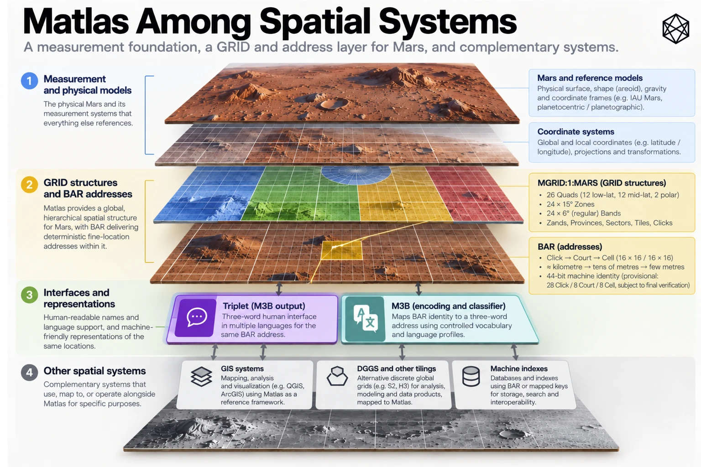
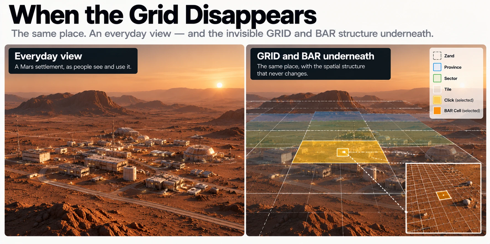
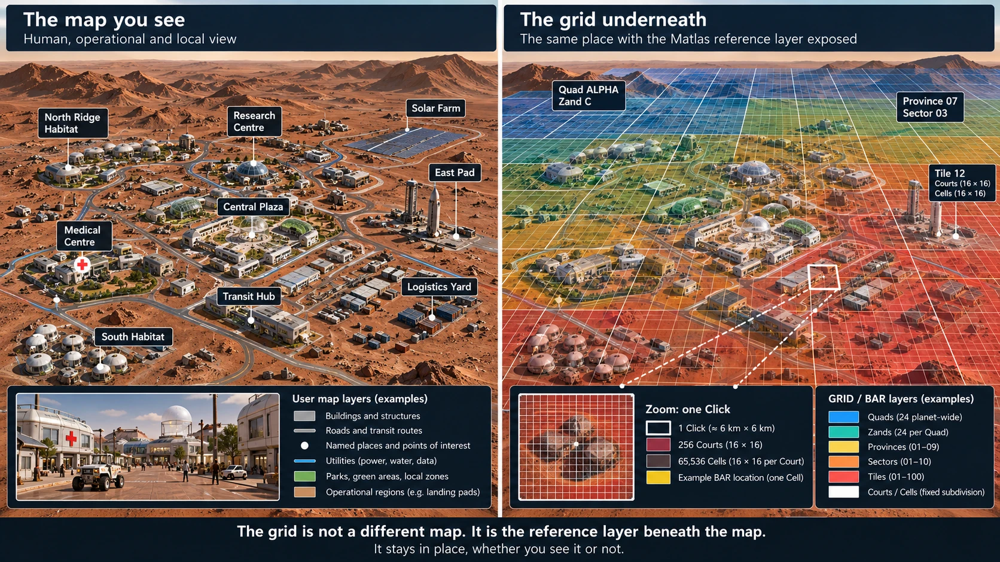
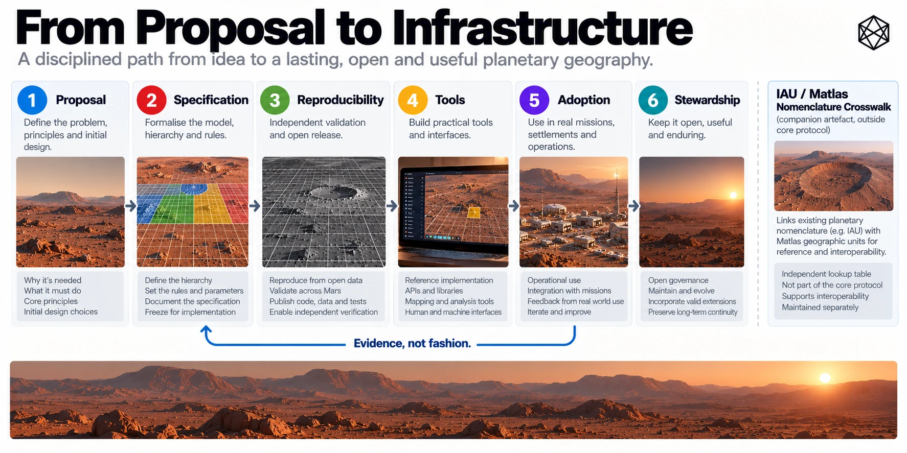
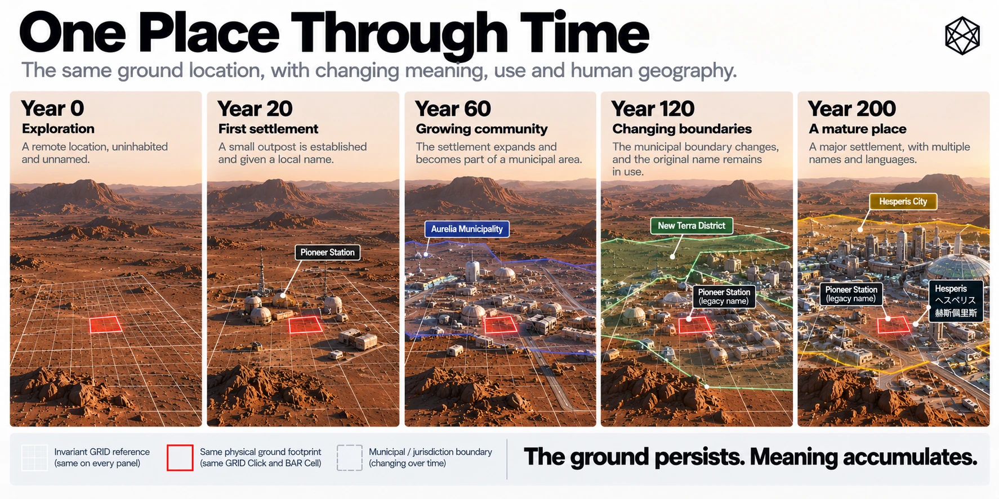

I - Interoperability and Implementation
Reference Frames, Crosswalks, Overlays, APIs and Open Protocol Stewardship
Matlas is intended to become useful alongside the systems that already measure, map and describe Mars. It does not require those systems to be replaced, nor does it assume that future settlements will organise all of their spatial activity around one geographic hierarchy.
Mars already has scientific coordinate systems, orbital imagery, elevation data, geological mapping and recognised planetary nomenclature. Permanent settlement will add infrastructure networks, emergency jurisdictions, construction plans, protected sites, resource agreements, local addresses and cultural place names.
Those systems answer different questions. Their boundaries may overlap, their reference frames may differ, and their records may change on different timescales.
Matlas proposes a common layer between them: a persistent reference to the same physical ground.
The practical implementation challenge is therefore not to make Matlas the only geography of Mars. It is to make Matlas straightforward to use with the many other geographies that a functioning planetary civilisation will need.
This appendix sets out that relationship. It explains how external coordinates enter the frozen Matlas reference, how established maps and names can be cross-referenced, how GIS and specialist grids coexist with GRID and BAR, and how future implementations can reproduce the system without depending on the original project or a proprietary online service.
The guiding principle is:
One persistent reference, many compatible systems.
I.1 — Matlas Within the Martian Spatial Stack

Matlas occupies a deliberately narrow position in the wider architecture of planetary geography.
Its relationship to surrounding systems can be expressed as three broad layers:
Measurement → Persistent Spatial Identity → Governance, Operations and Culture
The measurement layer establishes where something is through coordinates, observations, reference frames and scientific models.
Matlas provides persistent identities for defined areas of that measured surface. GRID supplies the geographic hierarchy; BAR supplies fine Court and Cell identities; Triplet provides an optional human-language representation.
Above those identities sit the systems through which people interpret, use, manage and inhabit territory.
I.1.1 — The interoperability model
Layer or system | Principal responsibility | Relationship to Matlas |
|---|---|---|
Scientific coordinates and reference frames | Measure planetary position | Supply positions for conversion into MRR-1 |
Orbital imagery and elevation models | Describe observed terrain | Remain independent mapped datasets |
IAU planetary nomenclature | Recognised names of planetary features | Connect through attributed gazetteer crosswalks |
Mars GRID | Persistent geographic area identity | Canonical Matlas hierarchy |
Mars BAR | Fine Court and Cell address identity | Canonical Matlas addressing |
Triplet/M3B | Human representation of BAR addresses | Versioned language interface |
GIS platforms | Display, combine and analyse spatial information | Consume GRID/BAR and other datasets together |
DGGS and specialist spatial indexes | Computational spatial indexing and analysis | Interoperate through coordinate and geometric crosswalks |
Scientific and environmental overlays | Record geology, hazards, resources and protected terrain | Use Matlas as optional common reference |
Utilities and transport systems | Manage infrastructure, networks and operations | Associate assets and operational areas with Matlas locations |
Legal and administrative systems | Define rights, restrictions and jurisdictions | Preserve their own authoritative boundaries |
Settlement address systems | Identify streets, buildings, entrances and local destinations | Resolve local references to BAR where useful |
Cultural geography | Express names, memory, identity and belonging | Remains independently determined by inhabitants |
The underlying reference is not meant to become the authority over everything connected to it.
A GRID Province can contain an industrial facility without becoming its regulator. A BAR Cell can identify the location of a protected scientific instrument without determining the instrument's legal status. A settlement can use a street address without requiring the street to follow GRID boundaries.
Interoperability works when those distinctions are preserved.


I.2 — Reference-Frame Conversion
Every canonical GRID and BAR location inherits its spatial meaning from the frozen Matlas civil reference, MRR-1 — MGrid Mars Reference Realisation 1.
MRR-1 uses planetocentric latitude and east-positive longitude, with longitude normalised to the interval from 0° inclusive to 360° exclusive.
The purpose of freezing the civil reference is persistence. It prevents improvements in scientific planetary measurement from silently changing which GRID or BAR identity belongs to an established position.
That persistence does not mean all future mapping systems must use MRR-1 directly.
It means they need an explicitly defined conversion into it when requesting a canonical Matlas identity.
I.2.1 — The reference-frame boundary
There are two distinct operations.
Direct indexing begins with a coordinate already established in MRR-1. It applies the GRID and BAR geometric rules to obtain a canonical location identity.
External conversion begins with a coordinate or vector expressed in another documented Martian reference frame. Before GRID or BAR indexing, that position must be transformed into the MRR-1 convention.
These should not be confused. A coordinate pair that happens to contain familiar-looking latitude and longitude numbers is not automatically an MRR-1 position.
Different data products may use different longitude conventions, latitude definitions, rotation models, reference epochs or underlying shape assumptions.
I.2.2 — Required source information
A robust conversion record should identify:
Input property | Why it matters |
|---|---|
Source frame and realisation | Establishes the original spatial meaning |
Coordinate representation | Distinguishes planetocentric, planetographic and Cartesian forms |
Longitude direction and range | Avoids east/west or 0°/360° interpretation errors |
Units | Prevents angular, linear or time-scale ambiguity |
Observation epoch and time scale | Supports time-dependent planetary orientation conversion |
Source kernels or reference products | Allows the transformation to be reproduced |
Origin or centre | Ensures that Cartesian vectors are interpreted relative to Mars correctly |
Height or shape conventions, when needed | Supports transformations that require more than angular direction |
Measurement uncertainty | Distinguishes mathematical membership from confidence in a measured position |
A longitude value cannot safely be treated as east-positive merely because that is Matlas's convention. A planetographic latitude cannot be relabelled planetocentric without the appropriate conversion.
Likewise, an input lacking the information required to establish its original reference frame should be rejected rather than silently assumed to be compatible.
I.2.3 — The MRR-1 transformation model
The selected MRR-1 reference design is based on the IAU/WGCCRE 2015 Mars orientation and longitude model, as represented in the identified NASA/NAIF planetary constants material.
For appropriate external Cartesian inputs, the intended reference process uses the relevant time-dependent orientation model to transform a Mars-centred position into the selected Mars body-fixed orientation, then derives planetocentric latitude and east-positive longitude.
An important distinction is that the selected 2015 model is a model generation, not an instruction to evaluate Mars's orientation at the date 2015.
The orientation must be evaluated at the observation epoch using the model frozen for MRR-1.
The external-frame implementation therefore needs the correct source and target frames, time argument, kernel set and reference transformation. It must not substitute another Mars orientation model simply because that model is newer or happens to be available in the local software environment.
I.2.4 — Conceptual conversion sequence
The intended sequence is:
- Read the source position with its declared frame, units, coordinate type and epoch.
- Resolve any necessary source-model, shape or time-scale conversions.
- Obtain the appropriately Mars-centred position in the documented source frame.
- Transform into the specified MRR-1 body-fixed reference using the frozen model at the relevant epoch.
- Derive canonical planetocentric latitude and east-positive longitude.
- Apply GRID's exact boundary and containment rules.
- Continue into BAR Court and Cell subdivision if fine addressing is required.
- Return the canonical identity together with transformation provenance and any relevant uncertainty.
Once a coordinate has been validly expressed in MRR-1, the GRID/BAR indexing stage is deterministic.
The accuracy of the resulting identity relative to a real surveyed location still depends on the quality and validity of the upstream measurement and conversion.
I.2.5 — Conformance boundary
The mathematical rules of MGRID:1 and BAR:1 have been specified and locally tested for stipulated MRR-1 coordinates.
The independent authentication and verification of external physical-reference transformations are a separate technical requirement. In particular, the selected source kernel, complete time-dependent conversion and independent NASA/NAIF SPICE parity evidence must be controlled and verified before claiming end-to-end external-frame conformance.
The intended architecture is precise about this distinction: a deterministic mathematical address is not, by itself, proof that every scientific coordinate supplied by an outside system has been converted with certified physical accuracy.
I.3 — Existing Mars Mapping and Scientific Data
Mars is already extensively mapped.
Planetary orbiters, landers and scientific missions have produced imagery, topography, geological observations, compositional data and many specialist maps. NASA, ESA, USGS and other institutions maintain substantial bodies of planetary scientific information.
Those resources describe Mars through measurements and observations. Matlas is intended to reference the same ground, not to become an alternative scientific map.
I.3.1 — Mapping integration
A conventional planetary GIS could display GRID and BAR alongside existing spatial datasets.
Existing dataset type | Example integration |
|---|---|
Orbital imagery | Display GRID boundaries and identifiers over images |
Elevation models | Associate terrain elevations, slopes and profiles with GRID areas |
Geological maps | Calculate which Quads, Zands or smaller units intersect mapped geological formations |
Mineral and resource observations | Group observations by stable GRID references without altering the scientific measurements |
Landing-site maps | Identify the containing GRID area and BAR Cell for operational features |
Traverse and mission records | Associate waypoints and routes with persistent Matlas references |
Scientific observation archives | Store GRID or BAR identifiers alongside original coordinates and source metadata |
These integrations do not imply that the mapped data must be resampled into GRID geometry.
An image can retain its original pixels and projection. A geological polygon can retain its surveyed or interpreted boundary. A traverse can remain a sequence of measured coordinates.
Matlas adds a reference field or overlay that makes the location easier to exchange and aggregate with records from other systems.
I.3.2 — Raster and vector relationships
Different scientific datasets require different treatment.
Raster datasets, such as imagery and elevation grids, consist of spatially referenced samples. Their relationship to GRID can be determined through cell footprints, sampling, raster overlays or area-weighted calculations, depending on the task.
Vector datasets, such as geological polygons, landing-site boundaries or traverse routes, can be intersected with GRID units using conventional computational geometry.
Neither operation requires a scientific feature to follow GRID boundaries.
The resulting association may be one-to-many or many-to-many. One geological unit may cover thousands of GRID Clicks. One Click may contain parts of several geological formations.
A crosswalk must preserve the original geometry and make clear whether a relationship means containment, intersection, representative-point membership or some other defined spatial operation.
I.4 — IAU Nomenclature and the Matlas Gazetteer Crosswalk
Mars already has recognised planetary feature names.
The IAU's planetary nomenclature system provides an established framework for naming recognised physical features. Matlas does not seek to replace it, revise those names or claim naming authority for future Martian settlements.
The appropriate relationship is a crosswalk.
I.4.1 — The proposed Gazetteer Crosswalk
The proposed Matlas Gazetteer Crosswalk is a machine-readable resource connecting named geographic features with Matlas spatial identities.
For recognised IAU planetary nomenclature, it may include an IAU/Matlas Nomenclature Crosswalk.
That wording is deliberate. Such a dataset would be a Matlas-produced cross-reference to recognised IAU nomenclature. It would not be an IAU-issued Matlas standard, and its existence would not imply IAU endorsement.
I.4.2 — Crosswalk behaviour
The crosswalk should support both directions.
Given a recognised feature, it should be possible to identify the relevant GRID areas containing its representative position or intersecting its documented extent.
Given a GRID unit, it should be possible to identify recognised features whose recorded positions or extents intersect that unit.
The result should retain the distinction between the original feature and Matlas's calculated geographic relationship to it.
A recognised crater does not become a Zand. A long canyon does not become a sequence of legally meaningful Clicks. The feature remains the feature, and the GRID units remain reference areas.
I.4.3 — Suggested crosswalk record
Field | Purpose |
|---|---|
Source organisation | Identifies the nomenclature authority or original dataset |
Source feature identifier | Preserves the feature's original record identity |
Recognised feature name | Retains the source name without replacing it |
Feature type | Distinguishes craters, valleys, mountains and other classes |
Source coordinates | Records source position and coordinate conventions |
Source extent, if available | Preserves documented spatial geometry |
Geometry quality | Distinguishes exact, approximate or representative geometry |
Matlas geometry version | Specifies the GRID version used for the crosswalk |
Matlas units | Lists containing or intersecting GRID references |
Relationship type | Identifies containment, intersection or representative-point membership |
Source date and crosswalk version | Supports reproducibility and updates |
Provenance and rights | Records source references, attribution and redistribution conditions |
Not every recognised planetary feature has a uniquely defined, precise polygon boundary. A catalogue may provide a centre point, a nominal diameter or another descriptive geometric representation.
The crosswalk must preserve that limitation.
A representative point can be assigned a containing GRID unit, but that does not establish a definitive footprint for the whole named feature. Where an extent is inferred or approximated, the method and uncertainty should remain visible.
I.4.4 — Versioning and authority
The crosswalk should be maintained independently of canonical GRID geometry.
New recognised feature names may be added. Existing records may be revised. Better mapped extents may become available, and earlier intersections may need to be recalculated.
Those changes produce new crosswalk dataset versions. They do not move established GRID boundaries or reassign Click identities.
Source names remain attributed to the source authority. Unofficial, local and future settlement names can be handled through separate gazetteers without being confused with formally recognised nomenclature.
The purpose of the resource is connection, not annexation.
I.5 — GIS and DGGS Interoperability
Matlas is intended to work within ordinary geospatial software, but it is not a replacement for GIS.
GIS provides the analytical environment in which different spatial datasets can be displayed, transformed, intersected, queried and compared.
GRID and BAR provide persistent identities for particular areas within that environment.
I.5.1 — GIS applications
A Martian GIS might combine GRID polygons with elevation, geology, infrastructure, hazards, scientific sites and local settlement plans.
Typical uses could include displaying a Zand boundary, identifying the Click containing an observation, listing all Sectors intersecting a planned road, or aggregating maintenance incidents by Province.
A GIS may also display BAR-addressed assets without representing every BAR Cell as an individual polygon throughout the planet. The precise Cell geometry can be reconstructed when required.
That is a useful distinction between the mathematical availability of an address and the practical need to materialise it as a large spatial dataset.
I.5.2 — DGGS and specialist grids
A Discrete Global Grid System, or DGGS, partitions a planetary surface into discrete cells for spatial indexing and analysis.
Such systems may be designed around different priorities from GRID, including equal-area behaviour, repeated hierarchical subdivision, efficient neighbourhood operations or high-volume computational processing.
Those priorities are legitimate and can be highly advantageous for particular tasks.
Matlas does not claim that its angular hierarchy is an equal-area or computationally optimal alternative.
Instead, GRID is designed as a persistent civil-operational reference with an understandable geographic hierarchy.
A specialist DGGS may be the better internal representation for a climate model, resource analysis, global raster operation or large spatial database.
The two systems can coexist.
I.5.3 — Crosswalking to another spatial grid
A DGGS crosswalk should be based on explicitly defined spatial relationships rather than an assumed one-to-one correspondence.
The possible relationships include:
Relationship | Meaning |
|---|---|
Point membership | A position belongs to one Matlas unit and one cell of the other grid |
Full containment | One cell is wholly contained in another |
Intersection | A Matlas area and a specialist cell overlap spatially |
Weighted overlap | A calculated fraction of area lies in each intersecting cell |
Representative-point assignment | One representative point is used to select a corresponding cell |
A many-to-many result is normal.
For example, an equal-area analytical grid may cut across several GRID Tiles, while one GRID Tile may intersect several equal-area cells. Neither system has to alter its geometry.
The crosswalk must also identify the reference realization, surface model, version and calculation method used to determine overlap.
A terrestrial grid implementation cannot simply be assumed to preserve its intended geodetic properties when applied to Mars. Its planetary reference and geometry must be specified for the Martian application.
I.5.4 — Area-sensitive analysis
Because GRID is not equal-area, simple counts of GRID cells are not necessarily proportional to physical surface area.
An analysis comparing resource density, incident rate or terrain coverage across different latitudes should use appropriately derived area measures or area-weighted operations.
The same caution applies when converting between GRID and an equal-area DGGS.
A spatial crosswalk can support an area calculation, but an identifier alone does not supply a universal equal-area measure.
The original analytical dataset and its measurement requirements should determine the appropriate calculation.
I.6 — Scientific, Utility and Legal Overlays
Much of Mars's future geography will consist of boundaries that are important but not permanent.
Scientific protection areas may change as research develops. Utility corridors may be rerouted. Industrial leases may expire. Emergency operating regions may expand. Political jurisdictions may change with settlement history.
Matlas should not attempt to make such boundaries permanent by embedding them in GRID.
Instead, they are represented as overlays.
I.6.1 — Overlay relationships
Overlay type | Examples | Relationship to Matlas |
|---|---|---|
Scientific | Geological units, sample sites, contamination-control zones | Associate independent scientific geometry with GRID/BAR references |
Environmental and hazard | Dust-risk areas, slope restrictions, radiation or terrain hazards | Retain specialist measurements and changing risk boundaries |
Resource | Deposits, exploration blocks, extraction areas | Cross-reference claims or observations without determining entitlement |
Utilities | Power lines, pipelines, water networks, communications links | Identify routes, assets and locations while preserving network topology |
Logistics | Landing corridors, staging areas, delivery zones, vehicle routes | Use GRID/BAR as stable positional context |
Legal | Leases, access rights, exclusions, easements and protected areas | Preserve legal source authority and original boundary geometry |
Administrative | Settlement districts, service areas, emergency jurisdictions | Permit organisational boundaries to change independently |
Cultural | Local districts, informal places, commemorative names | Support attribution and cross-reference without imposing names |
The same GRID Click may intersect several overlays simultaneously.
For example, it might lie within a research protection zone, an industrial operating region and an emergency service district, while also containing a pipeline and a scientific instrument.
That is not a contradiction. The layers describe different properties and responsibilities associated with the same ground.
I.6.2 — Overlay provenance
An operational overlay should preserve more than the geometry alone.
Useful accompanying fields include its source organisation, purpose, version, effective dates, original coordinate reference, authoritative geometry, calculation method, spatial precision and applicable rights or access conditions.
For legally significant data, the legal instrument and issuing authority remain essential.
A Matlas identifier cannot establish ownership or jurisdiction merely because a database associates it with a polygon.
The crosswalk records where the legal or operational object lies. The source system establishes what that object means.
I.6.3 — Time and historical records
Overlays may change while GRID remains stable.
A protected scientific site may expand. A utility company may replace one route with another. A settlement administration may combine two service districts.
Historic records should preserve which overlay version applied at the relevant time.
The GRID or BAR identity provides continuity underneath those changing overlays, making it possible to compare the same reference area across different institutional arrangements.
Persistent geographic identity is especially useful when the organisations that created the original records no longer exist.
I.7 — Local Addresses and Settlement Systems
A mature Martian settlement will develop its own addresses.
Buildings, doors, streets, corridors, industrial bays, habitat modules and transit facilities will acquire names and numbering systems suited to their actual use.
Those local systems will often be better for everyday life than a global GRID or BAR identifier.
Matlas is designed to sit underneath them rather than compete with them.
I.7.1 — Local-to-BAR resolution
A settlement may maintain a record connecting a local address to one or more BAR locations.
For example, a hypothetical address such as 14 Copernicus Lane could resolve to the BAR Cell associated with its principal entrance.
The building might occupy many Cells. Its entrance, emergency access point and loading area may occupy different Cells.
A local address therefore need not resolve to exactly one BAR Cell in every application.
Its appropriate mapping depends on whether the operational question concerns the building footprint, a delivery entrance, a rendezvous point or a particular asset.
The relationship should be explicit rather than assumed.
I.7.2 — Local address crosswalk
A useful local-address crosswalk might contain:
Field | Purpose |
|---|---|
Local address identifier | Identity within the settlement address system |
Human-readable address | Current local display name or address |
Issuing authority | Identifies the organisation responsible for the local address |
BAR location or set of locations | Connects the address to the common fine-address reference |
Location role | Distinguishes entrance, delivery point, site centre or footprint |
Local geometry, where available | Preserves building or facility extent |
Effective dates and status | Handles relocation, renaming and redevelopment |
Source and version | Supports reproducible interpretation |
This allows external systems to share locations without requiring a common local naming scheme.
A regional logistics platform could resolve a settlement address into BAR, exchange the canonical destination and present the recipient with the familiar local address again.
I.7.3 — Vertical and underground addressing
GRID and BAR are two-dimensional.
A facility with several floors, a tunnel network or an underground mine may contain multiple operational destinations sharing the same surface-reference Cell.
Those destinations need additional information.
Possible local systems may use floor levels, tunnel sections, engineering coordinates, vertical datums or network-based identifiers.
Matlas does not prescribe which should be universal.
A BAR Cell can identify the relevant surface footprint, access point or projected location while the specialised local system supplies the necessary three-dimensional distinction.
A future standardised vertical extension would need to define its reference and semantics carefully rather than merely append an unexplained height value to the address.
I.8 — Conceptual Implementation Interfaces

Useful adoption requires more than documents describing the architecture.
Developers will need libraries, functions, schemas, command-line utilities and, in many cases, network APIs.
Those interfaces should make Matlas easy to integrate without becoming the only means of determining what an address means.
The following interface descriptions are conceptual. They identify useful operations but are not ratified endpoint names, parameter schemas, error codes or wire protocols.
I.8.1 — Core geographic operations
Conceptual operation | Input | Expected result |
|---|---|---|
Coordinate to MRR-1 | Documented source position, reference and epoch | MRR-1 coordinate plus transformation provenance |
Coordinate to GRID | Valid MRR-1 latitude and longitude | Canonical GRID path at the requested level |
GRID to bounds | Valid GRID identifier | Exact angular boundaries and hierarchy metadata |
GRID ancestors | Valid GRID identifier | Ordered parent lineage to Mars |
GRID Click to ordinal | Valid canonical Click path | Click28 |
Ordinal to GRID Click | Valid Click28 | Canonical Click path |
Coordinate to BAR | Valid MRR-1 coordinate and requested address kind | Court36 or Cell44 as appropriate |
BAR decode | Contextual BAR machine address | Payload fields, GRID lineage and angular bounds |
BAR encode frame | Valid payload and kind | Tagged compact frame |
BAR decode frame | Tagged frame with required context | Validated payload and kind |
Triplet encode | BAR identity and immutable language profile | Issued three-word representation |
Triplet decode | Three words and immutable language profile | Canonical BAR identity and address kind |
The GRID and BAR operations follow the geometry and binary architecture established in Appendices E–G.
Triplet encode/decode additionally requires a complete released language profile. The unfinished English lexical production work cannot be bypassed by presenting an illustrative word list as a functioning lookup service.
I.8.2 — Companion services
Other interfaces may be useful without belonging to the normative geographic core.
These could include:
Conceptual service | Purpose |
|---|---|
IAU nomenclature search | Find recognised features and associated GRID references |
GRID feature lookup | Return known named features intersecting a GRID unit |
GIS geometry export | Supply reference polygons for analysis or visualisation |
DGGS crosswalk | Calculate documented point or area relationships with another spatial grid |
Overlay query | Find operational layers associated with a Matlas area |
Local-address resolution | Connect a settlement address to an appropriate BAR reference |
Neighbour query | Identify adjoining GRID units under a defined adjacency interpretation |
These services may be maintained by different organisations.
Their data can change independently of the canonical GRID and BAR specifications.
In particular, a complete normative global adjacency interface across every P1 polar T-junction is unfinished interface work, not an already established version-one operation.
I.8.3 — Worked integration sequence
Consider the example location used in Appendices E and G:
41.351°N, 68.421°E
Assume the coordinate has already been established in MRR-1.
A mapping or logistics application can determine its containing GRID Click:
MGRID:1:MARS/Q03/Z0506/P32/S24/T0405/C42
That Click has global ordinal:
14,116,819
The fine subdivision from Appendix G yields a Cell44 payload of:
925159851250
Its tagged six-byte Cell frame is:
30D767D304F2
The canonical contextual BAR representation is:
{"bar":"BAR:1:MARS","frame_hex":"30D767D304F2","mgrid":"MGRID:1:MARS","reference":"MRR-1","wire":"BAR-JSON:1"}
A receiving application with the specified protocol can decode the frame, recover the complete GRID Click lineage and reconstruct the containing Cell's angular bounds.
It can then display that Cell over the appropriate scientific map, associate it with an asset or resolve it against a local facility database.
A future released Triplet profile may also produce a corresponding three-word representation. The worked example does not assert a currently issued Triplet.
I.8.4 — Errors, uncertainty and canonical output
The interface should distinguish invalid input from valid input whose physical location remains uncertain.
An invalid GRID path must be rejected. An unsupported BAR version must not be silently interpreted using another version. A missing source coordinate frame cannot safely be guessed.
A coordinate measurement with uncertainty crossing a Cell boundary is different. It may be a valid measurement whose evidence does not justify a unique physical Cell assignment.
An application should preserve that uncertainty rather than present a mathematically precise identifier as proof of equally precise measurement.
Conceptual APIs should therefore provide explicit validation outcomes, provenance and uncertainty information appropriate to the operation.
I.9 — Offline Operation and Independent Implementations
Matlas should be independently implementable.
An organisation should be able to obtain the specifications, reference definitions, necessary tables and conformance material, then reconstruct the same GRID and BAR answers without relying on a live service operated by the original project.
That is especially valuable on Mars, where network connectivity cannot be assumed during every operation.
I.9.1 — What must be reproducible
At minimum, independent implementations should be capable of reproducing:
- GRID containment from valid MRR-1 coordinates.
- Canonical identifiers and exact boundary ownership.
- Regular and P1 polar subdivision.
- Global Click ordinal encoding and inverse decoding.
- BAR Court and Cell identity construction.
- Tagged machine frame and contextual BAR transport.
- Exact angular bounds for decoded locations.
- Language encoding and decoding once a complete, immutable Triplet profile is released.
Where an external scientific coordinate transformation is offered, its required source models, kernels, epochs and verification evidence must also be available under appropriate terms.
Offline reproducibility does not require a device to carry a stored record for every one of the nearly 12.7 trillion BAR Cells.
The identities arise from the geometry and encoding rules. The required implementation information is small compared with a database enumerating every possible address.
I.9.2 — Reference code and independent code
Reference software is valuable because it demonstrates one interpretation of the written specification.
It is not intended to become the sole authority over spatial identity.
An independent implementation should be able to reproduce the same results from the normative definitions and pass the published tests.
If a reference implementation is later replaced, becomes obsolete or contains a correctable software defect, the underlying geography should remain interpretable.
The aim is to make dependency on a particular provider unnecessary.
The practical distinction is worth preserving:
An API makes a system available. A specification makes it reproducible.
Both can be useful. Only the latter is sufficient for infrastructure designed to survive organisational and technological change.
I.10 — Conformance Classes and Validation
Matlas requires several kinds of validation, and they should not be confused.
A correct integer packing routine does not certify a planetary coordinate transformation. A mathematically exact Cell boundary does not establish human usability. A functioning Triplet demonstration does not prove that the complete language profile covers every valid address.
Conformance should be organised around these different claims.
I.10.1 — Implementation and evidence classes
Class or category | Principal subject | Required evidence |
|---|---|---|
MGRID angular geometry | Canonical hierarchy and B1/N1 ownership | Coordinate-to-identifier vectors, inverse bounds, boundary and apex tests |
P1 polar geometry | Adaptive branch selection and topology | Exact branch decisions, reconstructed polar counts, apex and seam tests |
Click ordinal conformance | Full path-to-ordinal bijection | Valid-range, inverse and polar ordering tests |
BAR-L1 | BAR integer packing, frames and contextual serialization | Bit-exact round trips and malformed-input rejection |
BAR-L2 | End-to-end angular lookup for stipulated MRR-1 coordinates | Coordinate-to-Cell and recovered-bound tests |
BAR-X | Cross-language software interoperability | Independent implementations producing identical canonical results |
BAR-P | External physical reference-frame conversion | Authenticated source models, independently verified SPICE transformations and precision evidence |
BAR-E | Independent external verification | Third-party reference vectors and review |
Triplet language conformance | Complete lexical mapping and safe decoding | Frozen dictionary, capacity proof, collision tests, independent encode/decode |
Human-factors evaluation | Practical communication and usability | Tests involving speakers, accents, errors, operational tasks and relevant environmental conditions |
The BAR-L1, BAR-L2, BAR-X, BAR-P and BAR-E labels follow the current technical validation structure.
The other descriptions identify corresponding test categories rather than introducing new formally ratified class identifiers.
I.10.2 — Essential test conditions
Conformance tests should cover ordinary cases and the boundaries most likely to expose implementation disagreement.
For GRID, this includes the longitude wrap, exact Zone and Band boundaries, equatorial ownership, the ±30° transitions, the 72° polar seam, P1 branching changes and the exact north and south apexes.
For BAR, testing must include zero-valued fields, maximum valid ordinals, reserved values, Court/Cell row and column boundaries, tagged frame lengths and complete inverse decoding.
For Triplet, a production release must establish coverage of every valid address in its stated domain, uniqueness of issued triples, Court/Cell W3 exclusivity, deterministic assignment, valid reuse and rejection of ambiguous or unknown profile inputs.
For external reference-frame conversion, the evidence must include independently checked transformations using the pinned source model, appropriate time scales and test epochs, together with cases designed to expose frame mismatches.
These tests should be machine-readable and executable without requiring a developer to request access to a private service.
I.10.3 — Current technical status
The MGRID and BAR mathematical architecture has been substantially specified, and local conformance work has exercised the hierarchy, polar branching and machine identities.
The P1 branching topology has an independently reconstructed numerical verification record within the project. The machine address packing and contextual BAR representations have likewise been locally tested.
That does not constitute complete third-party certification or final public normative release.
In particular, externally authenticated MRR-1 physical-reference transformations and independent geodetic parity remain open technical evidence requirements. The complete MB3-EN1 language release, including frozen production vocabulary and assignment proofs, also remains unfinished.
These qualifications should accompany the technical materials rather than being hidden behind general statements that the system has been validated.
I.11 — Versioning and Historical Integrity
Matlas uses several related but distinct technical artifacts.
They should not all share one mutable version number.
I.11.1 — Separate version domains
Version domain | What it controls | Example |
|---|---|---|
GRID geometry | Spatial hierarchy, boundaries and ownership | MGRID:1:MARS |
Civil reference realisation | Frozen reference interpretation | MRR-1 |
BAR machine protocol | Fine addressing, payload semantics and transport | BAR:1:MARS |
BAR contextual wire profile | Canonical machine message representation | BAR-JSON:1 |
Triplet language release | Vocabulary, Safety Groups and issued word assignments | Immutable MB3-EN1 release identifier |
Reference software | Implementation code and defects | Separately versioned software |
Gazetteer crosswalk | Names and calculated geometric relationships | Separately dated or versioned dataset |
Overlays and local addresses | Institutional and operational information | Source-controlled dataset versions |
The distinction matters because different changes have different consequences.
A newer satellite image should not change a GRID identity. A corrected gazetteer record should not require a BAR version change. A revised English Triplet word assignment should not move the underlying Cell.
Conversely, a change that moves canonical GRID boundaries or reassigns spatial ownership cannot be treated as a harmless software update.
I.11.2 — Geometry-breaking changes
A new major GRID geometry version is required when a change alters which defined spatial identity belongs to a position.
Examples include changing boundary ownership, redefining the polar geometry, moving canonical divisions or changing the meaning of established Click paths.
A change to the global Click ordinal mapping also has consequences for BAR identities and must receive explicit compatibility treatment.
Old records must not be silently reinterpreted under new rules.
I.11.3 — Preservation of old releases
Persistence requires archival continuity.
A century-old maintenance record may use a retired software implementation, an earlier reference conversion and a lexical profile no longer preferred for contemporary speech.
If its identifiers are to remain meaningful, the relevant historical specifications and decoding materials must remain available.
That implies preserving old protocol releases, version manifests, conformance vectors, language profiles and transformation provenance.
A new application need not expose every old interface to its users, but an infrastructure archive should retain enough information to interpret earlier records accurately.
Historical identity is only durable when the documentation needed to understand it is durable too.
I.12 — Open Protocol Materials and the Copyrighted Book
The publication model for Matlas distinguishes the explanatory book from the operational protocol.
The book and its appendices describe the purpose, design choices, architecture, limitations and intended applications of Matlas.
The technical protocol provides the material needed to implement and verify the system independently.
Those are different publication functions and can be governed by different licences.
I.12.1 — The book
Matlas: An Operational Map of Human Mars is an authored work by JB Bullock.
The manuscript's copyright page identifies:
Copyright © JB Bullock 2026. All rights reserved.
The book contains the narrative argument, original explanatory text, illustrations, diagrams and editorial presentation of the architecture.
It may be made available for online reading, subject to the author's chosen publishing arrangements, without thereby placing its complete literary text and artwork under an open protocol licence.
Public readability is not identical to permission to reproduce, redistribute, adapt or commercially reuse a copyrighted book.
Nor should the book's copyright notice be interpreted as replacing the terms of separately licensed technical materials.
I.12.2 — The Matlas Protocol
The intended open technical release is a separate body of material.
It should include the formal GRID and BAR specifications, reference geometry, machine-readable tables, executable algorithms, canonical encodings, validation cases and conformance documentation.
Completed Triplet language releases should likewise provide the vocabulary and deterministic decoding material required for independent use, subject to lexical source rights.
Each released artifact or clearly defined group of artifacts should carry its own explicit licence, copyright attribution, version and applicable third-party notices.
Technical specifications, software and datasets may reasonably require different licensing treatment. The presence of one licence in a repository should not be assumed to override all other terms.
No particular software, documentation or data licence is established merely by describing Matlas as open. The exact permissions must be stated in the controlled public release.
I.12.3 — Reference resources and third-party rights
Some technical materials draw upon external sources.
Planetary orientation models, nomenclature data, scientific maps, dictionaries and pronunciation resources have their own provenance and legal conditions.
Matlas should identify those sources accurately, preserve attribution, document transformations and distinguish original project material from third-party content.
A source dataset should not be redistributed under a Matlas licence simply because it was publicly accessible.
Likewise, a derived crosswalk or lexical table should be checked for the rights necessary to publish it.
An open implementation depends on clear permissions as well as published algorithms.
I.12.4 — Machine-readable publication
The protocol should be available in forms suitable for both people and software.
Human-readable specifications help developers understand what is required. Structured data, schemas and test vectors allow machines to inspect and verify exact behaviour.
A public repository can host version-controlled technical files, reference implementations, automated tests and release manifests. Archival publications can preserve significant immutable versions and their provenance.
The book may point readers to those resources without requiring them to purchase or reproduce the book to implement the standard.
The intended boundary is therefore straightforward:
Publication component | Principal purpose | Rights treatment |
|---|---|---|
Matlas book and artwork | Explain and communicate the architecture | Separately copyrighted authored publication |
“Matlas” overall naming, branding & trademark | Explain and communicate the architecture | Separately copyrighted authored publication. Trademark applications pending. |
Mars Grid & Mars BAR Normative technical specifications | Define interoperable behaviour | Explicitly licensed technical documentation |
Reference software | Demonstrate implementation | Explicit software licence |
Machine-readable tables and test data | Support reproducibility and conformance | Explicit data terms and provenance |
Triplet language releases | Enable deterministic linguistic encoding | Release-specific licensing and lexical source review |
Gazetteers and crosswalks | Connect Matlas with external datasets | Dataset-specific rights and source attribution |
This separation allows the authored book to retain its own publishing identity while the underlying technical architecture is made independently implementable under the terms chosen for the protocol.
I.13 — Release Contents and Maintenance
A complete Matlas technical release should be useful without requiring a developer to reconstruct its definitions from the book's narrative chapters.
Its supporting materials should include:
Release component | Principal content |
|---|---|
Architecture overview | Concise explanation of GRID, BAR, Triplet and their relationships |
MGRID specification | Canonical hierarchy, geometry, identifiers and boundaries |
MRR-1 reference material | Source model, conventions, transformation dependencies and provenance |
Polar P1 specification | Formula, exact branching tables and topology verification |
GRID machine artifacts | Global Click ordinal rules and inverse references |
BAR specification | Court/Cell geometry, binary payloads and contextual transport |
Language-profile specifications | Frozen lexical architecture and issued assignments when released |
Reference implementations | Independently reproducible encoder and decoder software |
Conformance material | Positive and negative vectors, expected outputs and proofs |
Crosswalk resources | IAU nomenclature and other clearly attributed companion datasets |
Version and change records | Major releases, compatibility policy and historical references |
Licence and rights files | Exact permissions, third-party notices and source provenance |
An open release should distinguish normative requirements from explanatory guidance and unfinished proposals.
The primary protocol must not rely on a current website, commercial database or author-controlled API for its geographic meaning.
Publication should also support stewardship. As implementations reveal ambiguities or new requirements, the project can refine documentation, improve software, update companion datasets and evaluate proposed extensions.
Not every useful change belongs in the canonical geometry.
A new overlay may be better than a new GRID field. A local address extension may be more appropriate than a universal vertical coordinate. A GIS service may solve a practical problem without requiring a change to the BAR identity.
The default should be to preserve the core unless the benefit of changing it justifies the cost imposed on every system that already depends upon it.
I.14 — The Independent Implementation Test
The strongest test of the open architecture is not whether the original Matlas implementation works.
It is whether somebody else can reproduce it.
Imagine the original project is no longer available.
A future organisation should still be able to obtain the relevant specifications and interpret an old GRID identifier. It should be able to reconstruct the correct Click boundaries, decode a BAR Cell, recover its parent hierarchy and establish which protocol version was used.
If it holds a valid immutable language release, it should also be able to reproduce the corresponding Triplet without querying the original project's servers.
If it wishes to connect Matlas with contemporary scientific maps, it should have the information needed to identify and verify the required reference transformation.
It should be able to test its own implementation and determine where the results agree or disagree with the published definitions.
This is a demanding objective, but not an extravagant one. It is what separates a system that is merely accessible from one that is independently maintainable.
The original author can propose the architecture and publish its first reference materials. The original project can maintain the initial code and documentation.
Neither should become a permanent dependency in the definition of a Martian location.
Over time, technical stewardship may involve planetary cartographers, geospatial engineers, software developers, settlement operators, linguists and other institutions. Future Martians may improve the architecture or replace parts of it altogether.
Those possibilities are compatible with the original proposal.
A stable reference system should make continuity possible. An open protocol should make succession possible. Neither should claim permanent authority over the cultural and political geography that people will create above it.
I.15 — Interoperability Reference Summary
Principle | Matlas implementation position |
|---|---|
Scientific measurement | Remains authoritative for measured positions |
MRR-1 | Frozen civil coordinate reference for version-one spatial identity |
External coordinates | Require documented, verified conversion before canonical indexing |
Existing imagery and maps | Retained as independent datasets and overlaid with Matlas |
IAU nomenclature | Preserved; connected by an attributed crosswalk |
GIS | Preferred environment for combining and analysing spatial layers |
DGGS | Independent specialist indexing and analysis; crosswalk by geometry |
Scientific and operational overlays | Remain separate, versioned spatial objects |
Legal boundaries | Defined by their own authoritative instruments |
Local settlement addresses | Resolve to BAR where useful; not displaced by it |
Canonical GRID/BAR | Deterministic, versioned spatial identities |
APIs and applications | Convenience interfaces, not sources of geographic authority |
Offline implementation | Intended to be possible from public protocol materials |
Conformance | Requires reproducible tests and clearly separated evidence classes |
Versioning | Independent histories for geometry, software, lexical profiles and companion data |
Book rights | Separately copyrighted authored publication |
Technical rights | Explicit licences attached to the released protocol materials |
Matlas is not intended to become the master authority for every map, boundary, address or place name on Mars.
Its useful role is narrower and more durable.
Scientific systems continue measuring the planet. GIS and specialist grids continue analysing it. Institutions continue defining operating areas and legal rights. Settlements develop their own addresses, and Martians develop their own names and identities.
GRID and BAR provide a persistent spatial reference underneath that changing activity. Triplet offers a human interface when one is useful.
The architecture succeeds when those other systems can connect to it without surrendering their own purposes, and when its core definitions can be reproduced without dependence on the original author, software or institution.
The book explains the choices. The protocol defines the behaviour. The implementations demonstrate that independent systems can agree.
And the places themselves remain for the people who will live there.
We name the grammar. Martians name the places.
